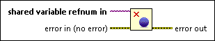
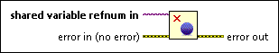

Close Variable Connection Function
Owning Palette: Shared Variable Node, VI, and Functions
Requires: Base Development System
Closes a connection to a shared variable.

 Add to the block diagram Add to the block diagram |
 Find on the palette Find on the palette |
Owning Palette: Shared Variable Node, VI, and Functions
Requires: Base Development System
Closes a connection to a shared variable.

| Add to the block diagram |
Find on the palette |
 |
shared variable refnum in is the reference to the shared variable or I/O variable container. You can right-click this input terminal and select Create»Control or Create»Constant to create this reference. You then can click the control or constant and select Browse to display the Browse Variable Objects dialog box. You also can find variable references programmatically. This input terminal accepts string values too. If you know the exact NI-PSP variable address, you can type the address into a string control and directly wire that string control to this input terminal. |
 |
error in describes error conditions that occur before this node runs. This input provides standard error in functionality. |
 |
error out contains error information. This output provides standard error out functionality. |
This function closes the variable connection even if an error is passed to the error in terminal.